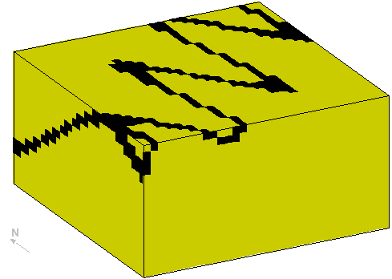
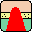
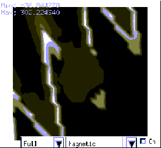
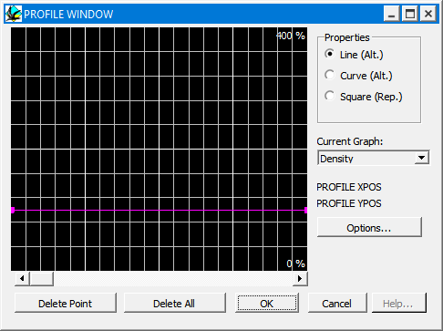
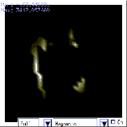
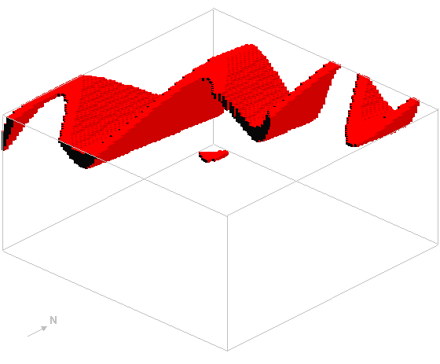
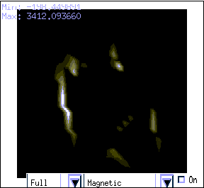
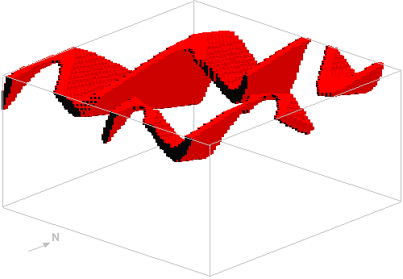

Tutorial 3: Alteration zones
Exercise 3: Using alteration zones
In this exercise we shall see how two different types of alteration zones may be used in Noddy to simulate contact aureoles around plugs and demagnetisation effects next to faults. The alteration zones in Noddy are defined in terms of 1 dimensional profiles as a function of distance from the causative surface and use the same general profile definition tool as faults and folds.
a) Let us start by reading in q3.his which defines a Base Stratigraphy->Fold->Tilt (ie
) history to provide some background for the later events, which should produce a block that looks like this (except with only three layers!):

b) Now we would like to emplace a vertical cylindrical plug in the middle of the block, so drop a plug icon

in the history window. Set the position of the plug somewhere in the middle of the block, and select a rock type of Porphyry from the Rock Property Database list, which will give the plug a susceptibility of 1.7x10-4. (The rock property database may be edited by selecting Edit Rock Database... from the Tools menu).c) Look at the magnetic preview, just to see what the result looks like without alteration zones:

d) Now we need to define the metamorphic aureole around this plug, first of all click off the On button in the preview window, and change the alteration type to Both, and then click on the Edit button. You will now be presented with an alteration profile definition window, that allows you to change the alteration profiles for each geophysical rock property individually. For this example just worry about the bulk magnetic susceptibility (when there is no anisotropy this is the X Axis (Sus) value). So select this parameter from the Current Graph: list.
Next we need to define the scaling parameters for this profile, so click on the Options button and set the Alteration Distance to 2000, the Min Scale Factor to -1 and the Max Scale Factor to +1, ie the width of the metamorphic aureole is 2000 m, and the y axis on the profile plot will vary between 10-1 to 10+1 (as a log scale). Now click on OK to return to the profile definition window, and set the Profile Type to Curve (Alt), which means all susceptibility values within 2000 m will be the product of the original value and the alteration values defined by the profile settings. Now draw a profile, such as the one shown below ranging between 2.0 on the left (at the plug country rock boundary) and 1.0 on the right (2000m away from the plug):

and preview the geophysical response again (by clicking on the On button), which should now look something like this:

f) This mag image is easier to understand if you make a block diagram, and then right click in the image, select Sus X from the Display Type, and then select only the Basalt layer from the Layers list, then click on OK, which produces a block like this:

g) Now add a fault event, and for the fault, set the Alteration Type to Both, and Edit the profile, setting for X Axis (Sus) (in the Options window) the Alteration Distance to 1000 and the Min Scale Factor to -1 and the Max Scale Factor to 1. In the profile window, set the Profile Type to Curved (Alt) and draw a profile like this, ie make the fault demagnetise the rocks close to it:
•The resulting geophysical image should now look something like this:

•The block diagram now looks like this:

Noddy · open source under the MIT licence · Loop3D/noddy_qt